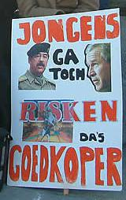

Biecht
maandag 24 maart 2003 | Actualiteit
“… los van of ik die oorlog verantwoord vind of niet, moet ik toegeven dat ik een zekere vorm van geestdrift voel eens de zaak van start gaat: de strategie, de opeenvolgende acties, de wendingen… Alsof het film, game of zelfs strategisch gezelschapspel is kijk ik op een jongensachtige manier uit naar successen en geniale charges.” — Pieter Schepens in een mailtje deze avond
In mijn vorig bericht van vandaag had ik het over de censuur in de Amerikaanse media, maar nu merk ik dat ik mezelf censureer. Ik hou er namelijk exact dezelfde gedachten en gevoelens op na, maar durfde die niet toegeven, laat staan erover schrijven. De anti-oorlogslobby heeft zijn werk goed gedaan.
Je kan nu nog zo hard tekeer gaan tegen Bush en zijn bommen, maar wie van films houdt of af en toe eens een game speelt, voelt niet alleen gruwel als hij naar de nachtelijke beelden kijkt van een Irak onder vuur. Ik neem het mijzelf niet kwalijk: deze oorlog is net als zijn voorlopers in Irak, Afghanistan en de Balkan volstrekt geabstraheerd van de werkelijkheid en gereduceerd tot spectaculaire vuurwerk videootjes of coole 3D animaties van peperdure gevechtstuigen. Tot je de eerste beelden te zien krijgt van krijgsgevangenen, aan flarden geschoten lijken en eenarmige kindjes… dan begrijp je waarom Bush zo strikt toeziet op de berichtgeving in eigen land.

Oorlog als strategisch gezelschapsspel?
Fre op 25 maart 2003
Ik had te vroeg op ‘publish’ geklikt en had er geen idee van dat mijn bericht al op de site stond. Je hebt dus gereageerd nog voor m’n bericht af was :-) The fastest comment ever!